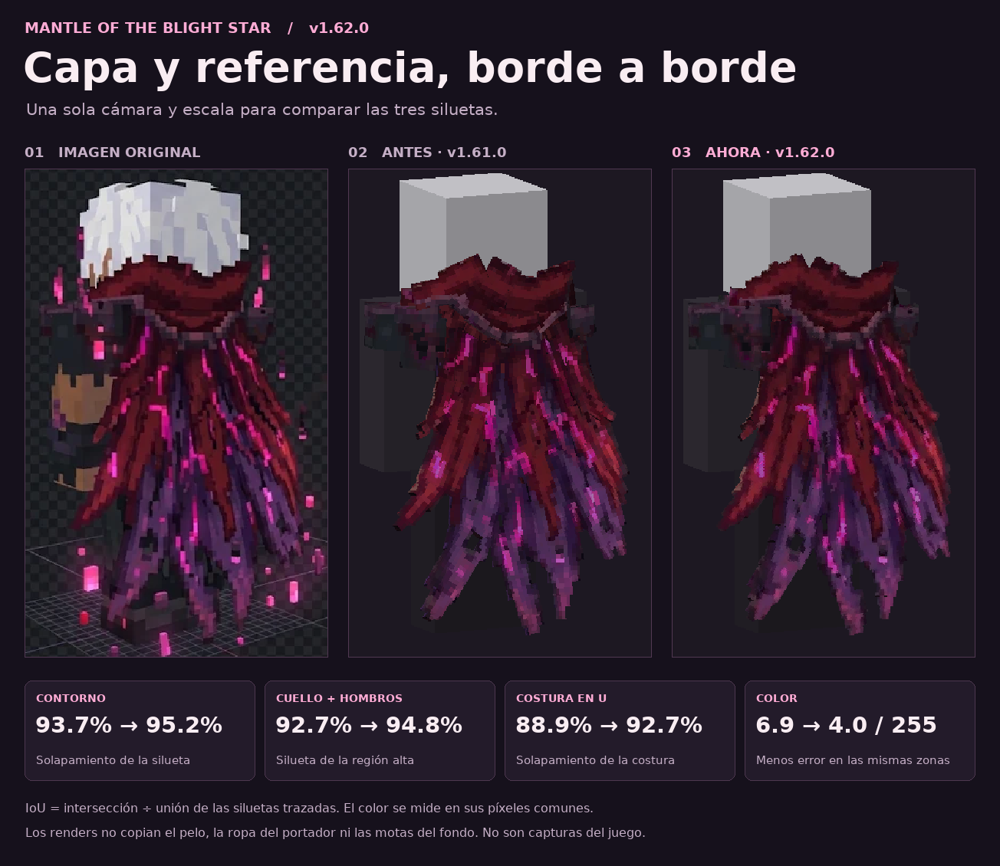

v1.62.0 · Crestas, jirones y luz de las grietas
Mantle of the Blight Star
Cuello granate plegado, costura en U, placas de carbón y desgarros que atraviesan el paño. Capa equipada para Forge 1.20.1 con GeckoLib 4.8.1.

Los modelos se muestran con un portador neutro. El pelo y la ropa de la referencia no forman parte de la capa. No son capturas in-game.